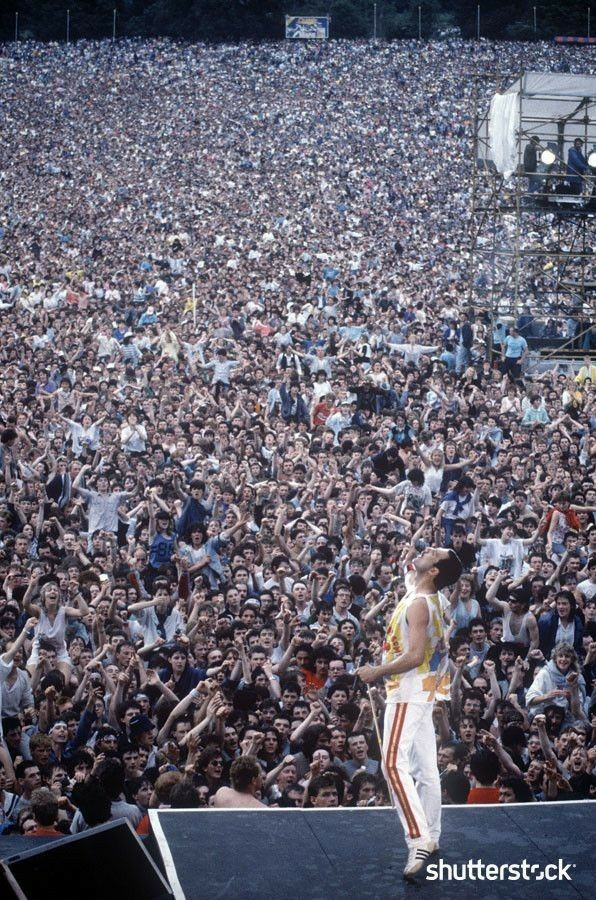

Shows
68 comeback Special- Elvis Presley (anos 60)
O retorno de Elvis Presley em 1968, conhecido como o "'68 Comeback Special", foi um show televisionado que o reconduziu ao topo. Foi uma performance poderosa que revitalizou sua carreira e o reafirmou como o "Rei do Rock".
Live and More - Donna Summer (anos 70)
Donna Summer, a "Rainha da Disco", dominou as pistas de dança nos anos 70. Suas apresentações eram cheias de energia com uma voz muito marcante que definiu uma era. "Last Dance" se tornou um hino mundial e um grande sucesso.

Bohemian Rhapsody - Queen (anos 80)
O show do Queen no "Live Aid" em 1985 é considerado por muitos como a melhor performance ao vivo da história. A banda Queen entregou um espetáculo cheio de energia e talento que parou o mundo inteiro. Foi um momento que consolidou a banda como lendas do rock.
Rod Stewart no Rio de Janeiro (anos 90)
O show de Rod Stewart em 1994 no Rio de Janeiro, na paraia de Copacabana, é considerado um dos maiores shows de rock gratuito. Uma multidão de milhões de pessoas se reuniu para ver o show, provando o grande sucesso de Rob na música.